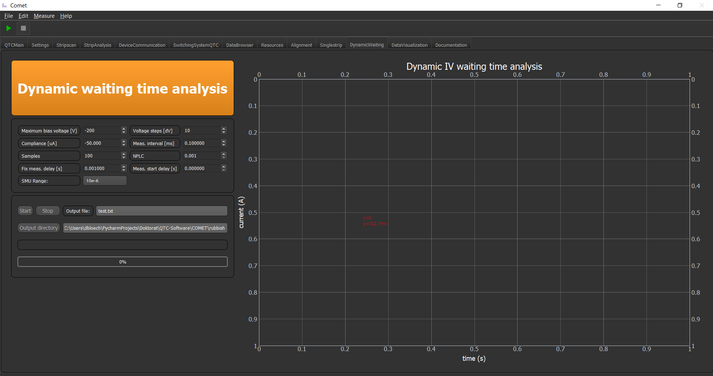

Relaxation Time Analysis¶
The Relaxation time analysis, does in principle, a time dependent IV curve. You can configure the basic IV parameters and further the parameters for the "fastness" of IV readings of the SMU.
Meas. interval [ms] - Measurement interval, this can be used to artificially prolong the overall time
Samples - How many samples you want to record
NPLC - A device specific value which gives the Number of Power Line Cycles. The range is device specific. But smaller values makes the measurement faster.
Meas. start delay [s] - Time delay after setting a voltage step, before the measurement begins
Fix meas delay [s] - Artificial delay between every measurement
SMU Range - MAXIMUM range of the current AUTO range
The other buttons should be self explanatory
Important
The total measurement time cannot be easily determined, since it is dependent on the devices capabilities. The easiest way is to try it out, until you have the desired length. But as a rule of thumb you can multiply the samples with all delays. Then you have roughly an estimation of the recorded time.